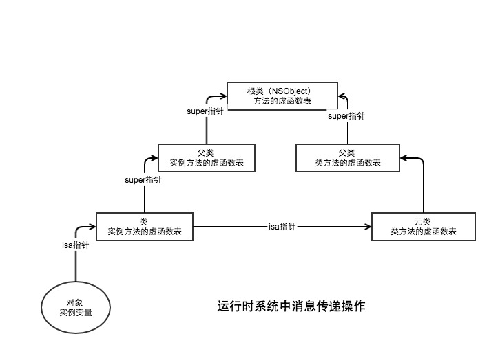

用Objective-C等面向对象语言编程时，“对象”就是“基本构建单元”，开发者可以通过对象来存储并传递数据。在对象之间传递数据并执行任务的过程叫做“消息传递”。当程序运行起来以后，为其提供相关支持的代码叫做“Objective-C运行期系统”，它提供了一些事得对象之间能够传递消息的重要函数，并且包括创建类实例所用的全部逻辑。
消息：向对象/类发送的名称(选择器)和一系列参数
方法：OC中的类或实例方法，其声明中含有名称、输入参数、返回值和方法签名（即输入参数和返回值得数据类型）；
方法绑定：接收想指定接收器发送的消息并寻找和执行适当方法的处理过程。OC运行时系统在调用方法时，会以动态绑定方式处理消息。
1.消息由接收者，选择子及参数构成。给某对象“发送消息”（invoke a method）也就相当于在该对象上调用方法。
//1.self是接收者 2.messageName:是选择子 3.选择子和参数合起来称为“消息”
id returnValue = [self messageName:@"messageValue"];
2.发给某对象的全部消息都要由“动态消息派发系统”来处理，该系统会查出对应的方法，并执行其代码。
编译器看到消息后，会将上面转换为一条标准的C语言函数调用。
第一个参数是接收者 第二个参数是选择子 后面的参数就是消息中的参数
void objc_msgSend(id self,SEL cmd,....);
id objc_returnValue = objc_msgSend(self,@selector(messageName:),@"messageValue");
执行过程 objc_msgSend 会根据接收者和选择子的类型来调用适当的方法
* 1.在接收者所在的类中搜其“方法列表”，找到相符的方法，就跳至其实现代码。
* 2.找不到就沿着继承体系继续往上找，等找到合适的方法后再跳转；
* 3.如果最终还是找不到相符的，就执行“消息转发”操作
若想令类能理解某条消息，我们必须以程序代码实现出对应的方法才行。但是，在编译期向类发送了无法解读的消息不会报错，因为运行时系统可以继续向类中添加方法，所以编译器编译时无法确定类中到底会不会有某个方法实现。当对象接受到无法解读的消息后，就会启动“消息转发”机制。

上图是消息转发过程:
//无法响应的实例方法
+(BOOL)resolveInstanceMethod:(SEL)sel;
//无法响应的类方法
+(BOOL)resolveClassMethod:(SEL)sel;
id absoluteValue(id self,SEL _cmd, id value){
NSInteger intVal = [value integerValue];
if (intVal < 0) {
return [NSNumber numberWithInteger:(intVal * -1)];
}
return value;
}
///动态添加实例方法方法
+(BOOL) resolveInstanceMethod:(SEL)sel{
NSString *method = NSStringFromSelector(sel);
if ([method hasPrefix:@"absoluteValue"]) {
class_addMethod([self class], sel, (IMP)absoluteValue, "@@:@");
NSLog(@"动态添加方法 方法名:%@",method);
return YES;
}
return NO;
}
当前接受方法对象还有第二次机会处理未知的选择子，在这一步运行期系统会问该对象：能不能把这条消息转给其他接收者处理。
//快速转发
//将该方法转给其他对象，从而实现快速转发
-(id)forwardingTargetForSelector:(SEL)aSelector;
- (id)forwardingTargetForSelector:(SEL)aSelector
{
if (aSelector == @selector(sendMessage:)) {
return [LMMessageForwarding new];
}
return nil;
}
//该方法能使对象能够使用消息的全部内容(目标，方法名，参数)
-(void)forwardInvocation:(NSInvocation *)anInvocation;
还有一个很重要的问题，我们必须重写以下方法：
- (NSMethodSignature *)methodSignatureForSelector:(SEL)aSelector;
消息转发机制使用从这个方法中获取的信息来创建NSInvocation对象。因此我们必须重写这个方法，为给定的selector提供一个合适的方法签名。
- (NSMethodSignature *)methodSignatureForSelector:(SEL)aSelector {
NSMethodSignature *signature = [super methodSignatureForSelector:aSelector];
if (!signature) {
if ([LMClass instancesRespondToSelector:aSelector]) {
signature = [SUTRuntimeMethodHelper instanceMethodSignatureForSelector:aSelector];
}
}
return signature;
}
- (void)forwardInvocation:(NSInvocation *)anInvocation {
if ([LMClass instancesRespondToSelector:anInvocation.selector]) {
[anInvocation invokeWithTarget:_class];
}
}
注意：forwardInvocation: 必须要经过 methodSignatureForSelector:方法来获得一个NSInvocation，开销比较大。苹果在 forwardingTargetForSelector 的discussion中也说这个方法是一个相对开销多的多的方法
接受者在每一步中均有机会处理消息。步骤越往后，处理消息的代价越大。
运行时系统通过动态类型功能，可以在运行程序时决定对象的类型，因而可以使运行时因素能够在程序中指定使用哪种对象。
//当使用静态方式设置变量的类型时，变量的类型就由它的声明决定。
LMClass *class
//动态声明，该变量的类型是在运行时确定的
id class
动态绑定是指在运行程序时（而不是在编译时）将消息与方法对应起来的处理过程
OC对象收到消息后，究竟会调用何种方法需要在运行期才能解析出来，所以与给定的选择子名称相对应的方法可以在运行期改变，也可以在运行期添加新方法。
动态创建方法
class_addMethod
//使用运行时系统创建类
//1.以动态方式穿件一个类
Class dynaClass = objc_allocateClassPair([NSObject class], "LMDynaClass", 0);
//2.以动态方式添加一个方法,使用已有方法（description）获取特征
Method description = class_getInstanceMethod([NSObject class], @selector(description));
const char *types = method_getTypeEncoding(description);
//class_addMethod(那个类添加新方法, SEL, 函数指针, 类型编码) 动态在类同添加方法
class_addMethod(dynaClass, @selector(getLMString), (IMP)getLMString, types);
///注册这个动态类
objc_registerClassPair(dynaClass);
动态跟换方法
method_exchangeImplementations
Method originalMethod = class_getInstanceMethod([NSStringclass], @selector(lowercaseString));
Method swappedMethod = class_getInstanceMethod([NSString class], @selector(uppercaseString));
//调用method_exchangeImplementations 交换
method_exchangeImplementations(originalMethod, swappedMethod);
//
NSString *string = @"This is The String";
//小写变大写方法
NSString *lowercaseString = [string lowercaseString];
//大写方法变小写
NSString *uppercaseString = [string uppercaseString];
NSLog(@"low= %@\n upp = %@",lowercaseString,uppercaseString);
Method lowString = class_getInstanceMethod([NSString class], @selector(lowercaseString));
Method lm_lowString = class_getInstanceMethod([NSString class], @selector(lm_lowercaseString));
method_exchangeImplementations(lowString, lm_lowString);
NSString *lowStr = [string lowercaseString];
NSLog(@"lowStr - >%@",lowStr)
-(NSString *)lm_lowercaseString{
//看上去想死循环 ，其实这方法是准备和loweercaseString互换，运行时会调换
//lm_lowercaseString 实际调用了 lowercaseString方法
NSString *lowercase = [self lm_lowercaseString];
NSLog(@"%@ => %@",self, lowercase);
return lowercase;
}
OC的运行时系统由两个主要部分构成：编译器和运行系统库。
编译器的作用是接收输入的源代码，生成使用了运行时系统库的代码，从而得到合法的、可执行的OC程序。
OC语言中的面向对象元素和动态特性都是通过运行时系统实现的。概括来说，运行时系统由下列部分组成：
类元素（接口、实现代码、协议、分类、方法、属性、实例变量）
类实例（对象）
对象消息传递（包括动态类型和动态绑定）
动态方法决议
动态加载
对象内省
关于实例与类的指针解释可以看回这一章节：对Objectiv-C的一些指针的理解
LMTestClass *tc1 = [[LMTestClass alloc] init];
tc1->myInt = 0xa5a5a5a5;
LMTestClass *tc2 = [[LMTestClass alloc] init];
tc2->myInt = 0xc3c3c3c3;
long tc1Size = class_getInstanceSize([LMTestClass class]);
NSData *obj1Data = [NSData dataWithBytes:(__bridge const void *)(tc1) length:tc1Size];
NSData *obj2Data = [NSData dataWithBytes:(__bridge const void*)(tc2) length:tc1Size];
NSLog(@"LMTestClass object tc1 contains %@", obj1Data);
NSLog(@"LMTestClass object tc2 contains %@", obj2Data);
NSLog(@“LMTestClass Memory address = %p",[LMTestClass class]);
输出结果
LMTestClass object tc1 contains <3874e000 01000000 a5a5a5a5 00000000>
LMTestClass object tc2 contains <3874e000 01000000 c3c3c3c3 00000000
LMTestClass Memory address = 0x100e07438
从输出结果可以看到3874e000 01000000 是isa指针，指向类。 a5a5a5a5 00000000是实例变量的值
0x100e07438 和 3874e000 01000000 地址是一样，在mac pro中使用翻转的字节顺序存储数据
从结果可以看出，实例对象中存在一个isa指针指向类，和存储含有实例变量的长度可变数据指针。
运行时系统库数据类型分为下列几类：
类定义数据结构（类、方法、实例变量、分类、IMP、和SEL等）
实例数据类型（id、objc_object和objc_super）
值（BOOL）
对象的类定义（objc_getClass）
类的父类（class_getSuperclass）
对象的元类定义（objc_getMetaClass）
类的名称（class_getName）
类的版本信息（class_getVersion）
以字节为单位的类尺寸（class_getInstanceSize）
类的实例变量列表（class_copyIvarList）
类的方法列表（class_copyMethodList）
类的协议列表（class_copyProtocoList）
类的属性列表（class_copyProperyList）
当程序向对象发送消息时，运行时系统会通过自定义代码中的类方法缓存和虚函数表查找类的实例方法。为了找到相应的方法，运行时系统会搜索整个类层次结构，找到该方法后，它就会执行该方法的实现代码。

元类是一种特殊的类对象，运行时系统使用其中含有的信息能够找到并调用类方法。每个类都拥有独一无二的元类。
对象的isa指针指向描述该对象的类，因此可使用该变量访问这个对象的实例方法、实例变量等。
上码
//获取元类数据
id metaClass = objc_getMetaClass("LMTestClass");
long mclzSize = class_getInstanceSize([metaClass class]);
NSData *mclzData = [NSData dataWithBytes:(__bridge const void * _Nullable)(metaClass) length:mclzSize];
NSLog(@"LMTestClass metaClass address:%@",mclzData);
long objSize = class_getInstanceSize([NSObject class]);
NSData *objData = [NSData dataWithBytes:(__bridge const void * _Nullable)([NSObject class]) length:objSize];
NSLog(@"NSObject address : %@", objData);
id objMetaClass = objc_getMetaClass("NSObject");
long objMetaSize = class_getInstanceSize([objMetaClass class]);
NSData *objMetaData = [NSData dataWithBytes:(__bridge const void * _Nullable)(objMetaClass) length:objMetaSize];
NSLog(@"NSObject MetaClass : %@",objMetaData);
LMTestClass元类带有一个指向父类元类的指针088eb808 01000000
//LMTestClass metaClass
LMTestClass metaClass address:<088eb808 01000000 088eb808 01000000 e05d1100 80610000 07000000 01000000 00af0700 00610000>
//--NSObject 地址
NSObject address : <088eb808 01000000>
因为NSObject是根类，所以它的元类isa指针指向自己
//NSObject 元类
NSObject MetaClass : <088eb808 01000000 588eb808 01000000 e005d0ed c77f0000 0f000000 02000000 00b00700 80600000>